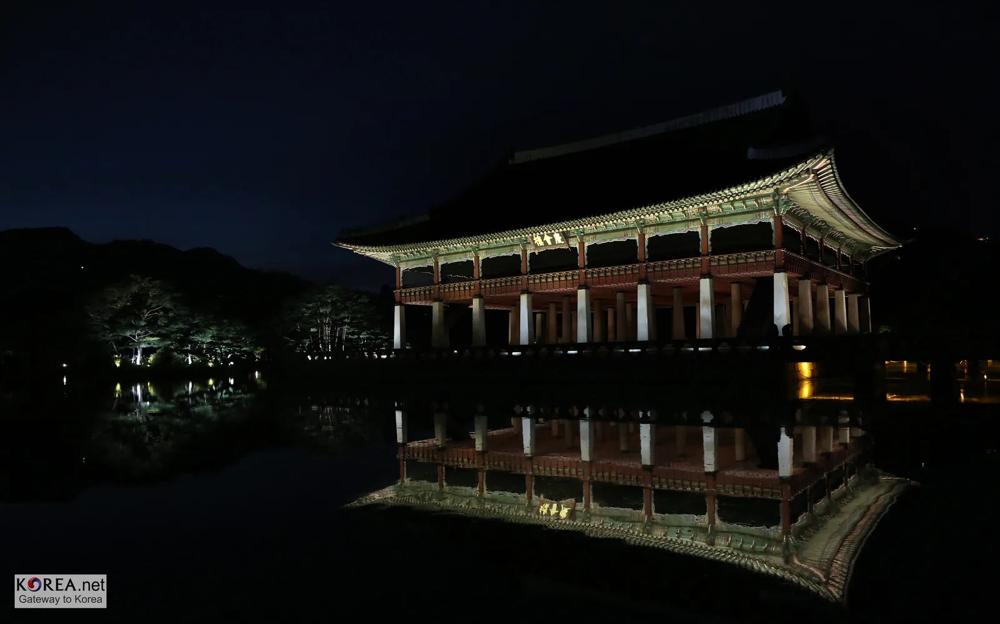
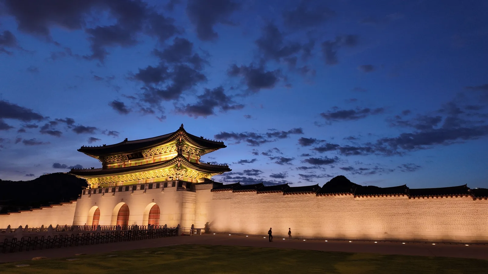
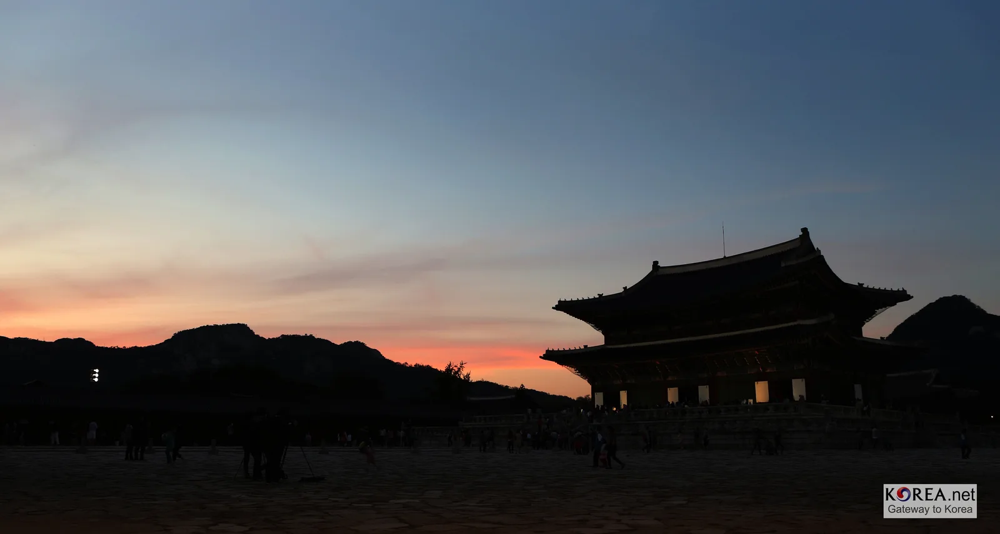
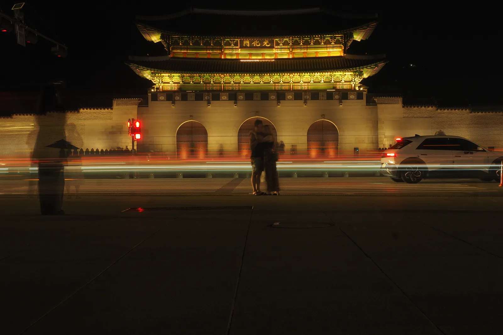

▲ 야간 조명이 켜진 경복궁 향원정. 일반 야간관람 기간에도 이런 풍경을 볼 수 있다 ⓒ Wikimedia Commons (CC BY-SA 2.0)
경복궁의 밤을 보는 방법은 두 가지다. 하나는 1인 6만 원짜리 프리미엄 프로그램 '별빛야행'이고, 다른 하나는 일반 야간관람이다. 별빛야행은 추첨 응모 자체가 8월에 끝나 지금은 신청할 수 없다. 하지만 9월 2일부터 10월 2일까지 이어지는 일반 야간관람은 이 글을 쓰는 지금도 여전히 예매가 가능하다.
1. 별빛야행과 일반 야간관람, 완전히 다른 티켓

▲ 해질 무렵 경복궁. 별빛야행과 일반 야간관람은 시간대와 프로그램이 완전히 다르다 ⓒ Wikimedia Commons
별빛야행은 도슭수라상(12첩 반상 식사), 집옥재 특별 창극 관람, 향원정 야간 산책까지 포함된 유료 체험 프로그램이다. 가격도 1인 6만 원으로 높고, 회당 38명이라는 좁은 정원 때문에 추첨 응모로 진행된다. 2026년 응모는 8월 14일부터 20일까지였고, 당첨자 발표와 예매까지 8월 안에 모두 끝났다.
반면 일반 야간관람은 특별 프로그램 없이 조명이 켜진 궁궐을 둘러보는 방식이다. 그만큼 가격도 낮고, 무엇보다 지금도 예매할 수 있다.
2. 하루 3,000매 — 선착순과 취소표

▲ 노을 무렵 경복궁. 일반 야간관람 예매는 관람일 기준 8월 26일 오전 10시부터 순차 오픈됐다 ⓒ Wikimedia Commons
일반 야간관람 예매는 NOL(놀티켓)에서만 진행되며, 하루 3,000매가 선착순으로 풀린다. 1인당 최대 4매까지 구매할 수 있다. 이미 예매가 마감된 날짜라도 포기할 필요는 없다. 예매자들이 개별적으로 취소하면서 좌석이 산발적으로 풀리는데, 관람 전날 오후 5시 무렵이 취소표가 몰리는 시점으로 알려져 있다. 취소 가능 시한 자체가 관람 전일 17시까지이기 때문이다.
3. 주차 — 부설주차장 요금 구조

▲ 야간 광화문 앞 도로. 경복궁 부설주차장은 도심 궁궐 주차장답게 시간제 요금이 적용된다 ⓒ Wikimedia Commons (CC BY-SA 4.0)
경복궁 부설주차장은 소형차 기준 1시간 3,000원, 이후 10분마다 800원이 추가되는 구조다. 야간관람은 회차당 2시간 30분(19:00~21:30) 운영되므로, 관람 시간만 계산해도 상당한 주차비가 나올 수 있다. 지하철 3호선 경복궁역이 바로 옆에 있는 만큼, 대중교통 이용을 함께 고려하는 것이 합리적이다.
4. 정리
체크포인트
- 별빛야행은 2026년 응모가 이미 마감됐다. 다음 기회는 내년을 노려야 한다.
- 일반 야간관람(9/2~10/2)은 하루 3,000매 선착순으로 아직 예매 가능하다.
- 매진된 날짜라도 관람 전날 오후 5시 전후 취소표를 확인해볼 만하다.
- 주차는 시간당 3,000원+10분당 800원 구조다. 경복궁역 지하철 이용도 고려하자.
예매는 NOL(놀티켓) 사이트에서, 주차 문의는 관리사무소 02-736-9536이다.